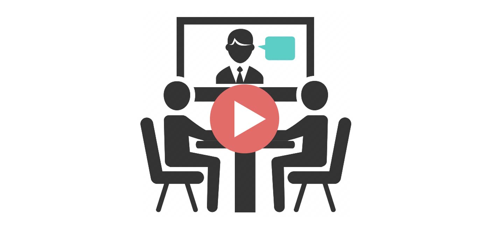
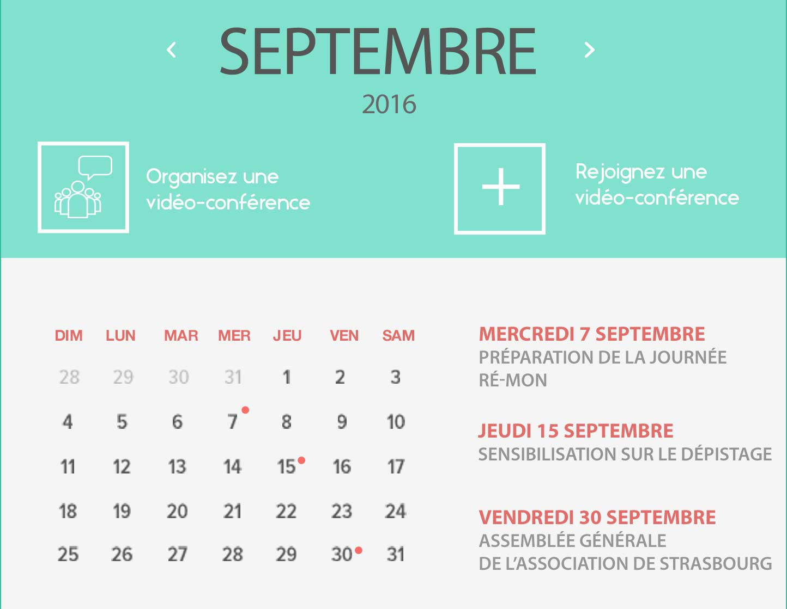

<section class="bureau">
	 <div class="container-fluid">
		<div class="row">
			<h1>Accueil > Bureau Virtuel</h1>	
		</div>
		
		<div  class="row" style="">
		<div class="content1">
			<div>Découvrez le Bureau virtuel et ses fonctionnalités</div>
			
			
			<div style="    margin-top: 30px;    text-align: center;margin-bottom: 50px;">
			<a class="remon_btn_inverse"><span>Organisez votre relai Local</span></a>
			<a class="remon_btn_inverse"><span>Contribuez à l'association 2.0</span></a>
			</div>
		</div>
		</div>
		
	</div>
	

 
</section>
